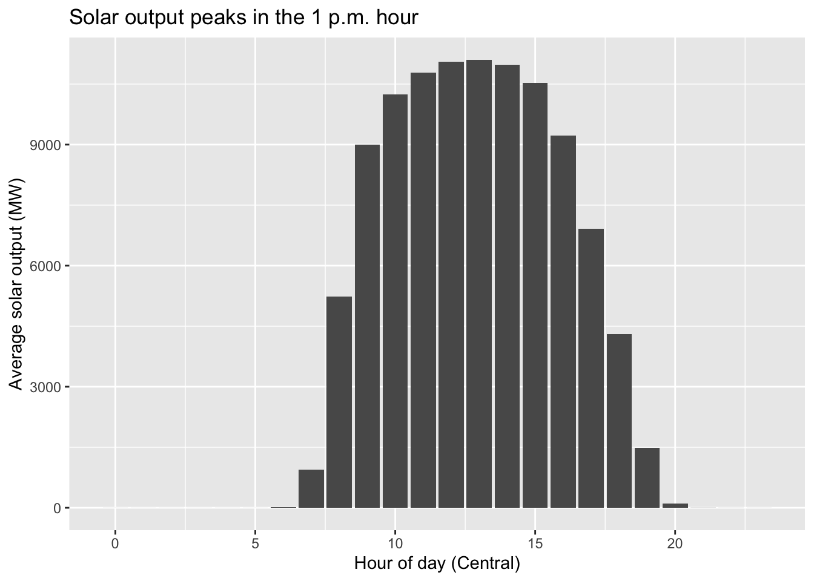
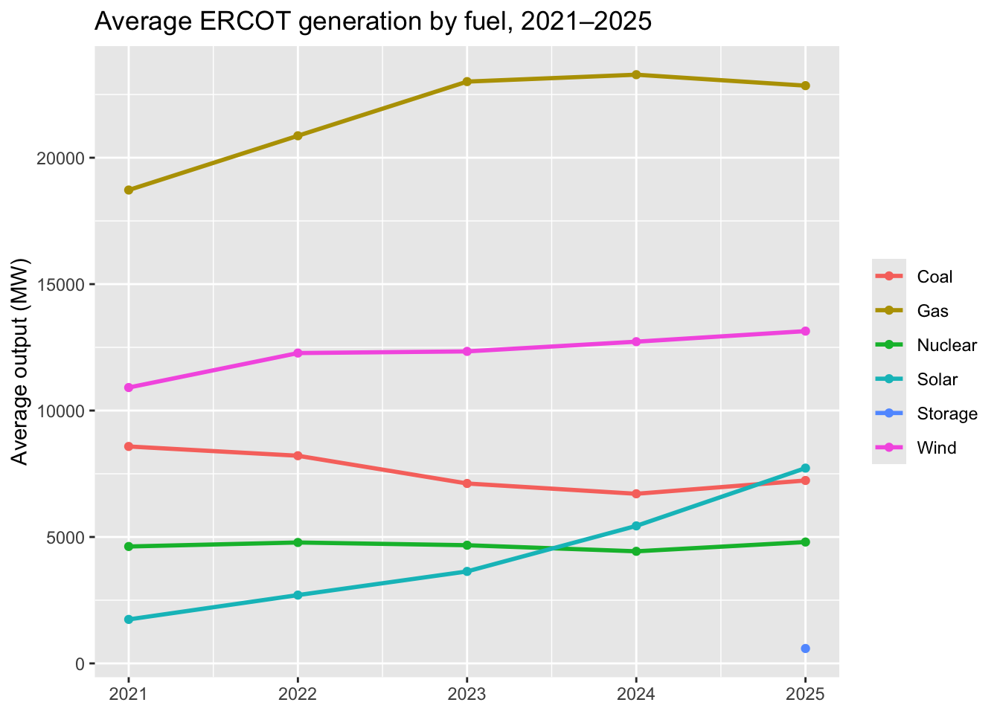
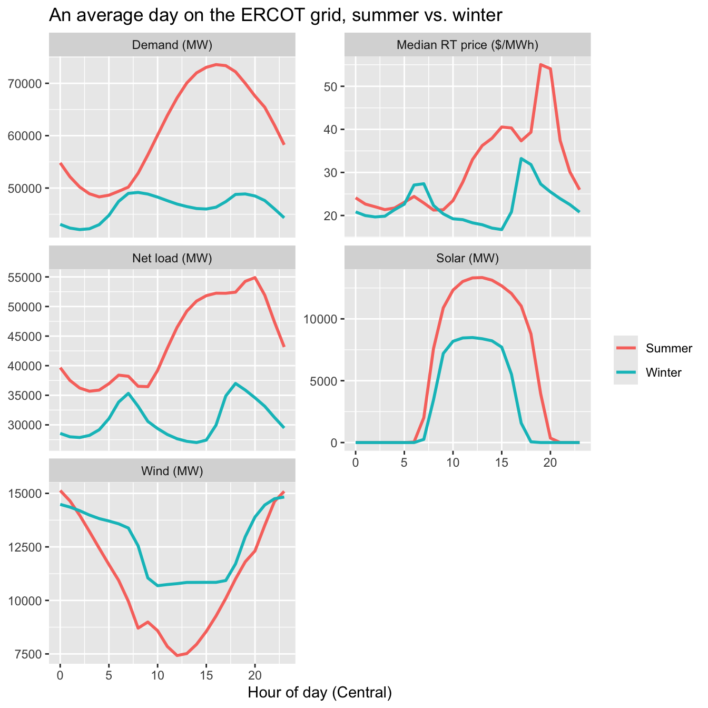
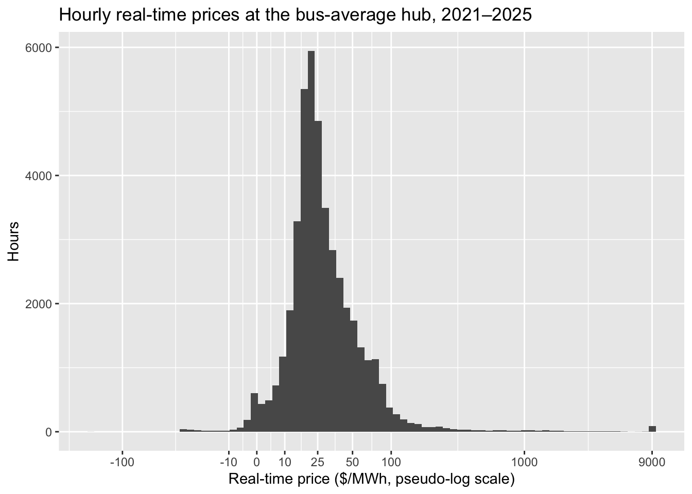
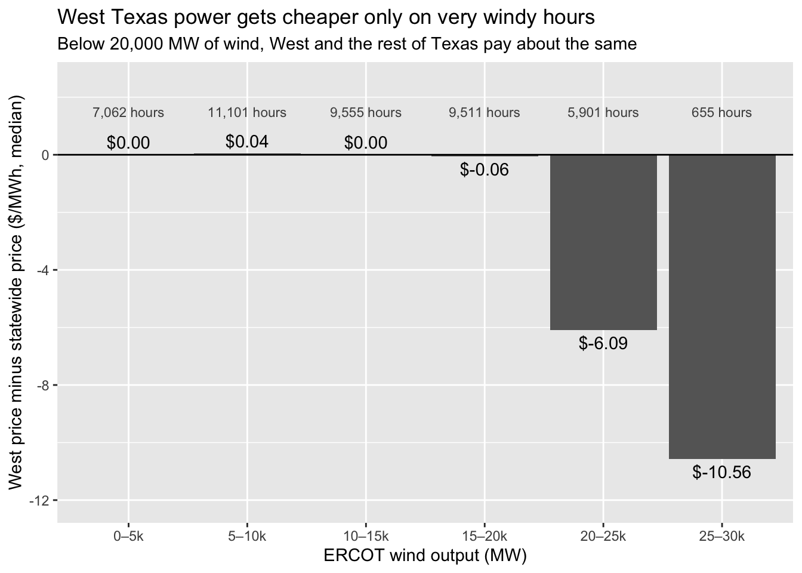

Code
library(tidyverse)
library(lubridate)
# Run the scripts in R/ first (see the README).
ercot <- read_rds(here::here("data/processed/ercot_hourly.rds"))Juan Ignacio Mendez Valdez
A first look at five years of ERCOT data (2021–2025): checking that it is reliable, how the grid has changed, and how prices behave.
Solar output should peak around 1 p.m. Central. A peak at noon or 2 p.m. would mean the hour conversion is off by one.
ercot |>
filter(hub == "HB_BUSAVG") |> # grid data repeats for every hub; use one
group_by(hour_local) |>
summarise(avg_solar = mean(solar_mw, na.rm = TRUE)) |>
ggplot(aes(hour_local, avg_solar)) +
geom_col() +
labs(x = "Hour of day (Central)", y = "Average solar output (MW)",
title = "Solar output peaks in the 1 p.m. hour")
Findings: Solar output peaks in the 1–2 p.m. Central hour, as expected for Texas, so the generation data and prices are aligned hour for hour.
How many hours are missing for each source, and are they clustered or scattered?
| Real-time price | Day-ahead price | Demand | Wind | Solar | Gas |
|---|---|---|---|---|---|
| 0 | 0 | 1 | 24 | 28 | 24 |
ercot |>
filter(hub == "HB_BUSAVG") |>
mutate(any_missing = if_any(c(demand_mw, wind_mw, solar_mw, gas_mw), is.na)) |>
count(year, month, wt = any_missing, name = "missing_hours") |>
filter(missing_hours > 0) |>
knitr::kable(col.names = c("Year", "Month", "Hours missing"),
caption = "Months with missing grid data")| Year | Month | Hours missing |
|---|---|---|
| 2021 | Nov | 1 |
| 2024 | Jul | 1 |
| 2024 | Nov | 3 |
| 2025 | Dec | 24 |
Findings: No prices are missing. Demand is missing for 1 hour, and wind, solar and gas for 24–28 hours, mostly a single day in December 2025. These gaps are small, so those hours are simply dropped.
ercot |>
group_by(year, hub) |>
summarise(avg_rt = mean(rt_price), avg_da = mean(da_price), .groups = "drop") |>
pivot_wider(names_from = hub, values_from = c(avg_rt, avg_da)) |>
select(year, avg_rt_HB_BUSAVG, avg_da_HB_BUSAVG, avg_rt_HB_WEST, avg_rt_HB_HOUSTON) |>
knitr::kable(digits = 1,
col.names = c("Year", "Statewide real-time", "Statewide day-ahead",
"West real-time", "Houston real-time"),
caption = "Average price by year (\\$/MWh)")| Year | Statewide real-time | Statewide day-ahead | West real-time | Houston real-time |
|---|---|---|---|---|
| 2021 | 148.7 | 146.0 | 145.7 | 150.8 |
| 2022 | 62.2 | 64.4 | 57.5 | 69.0 |
| 2023 | 48.1 | 55.7 | 49.4 | 49.6 |
| 2024 | 26.5 | 27.7 | 27.4 | 26.9 |
| 2025 | 32.3 | 33.2 | 32.9 | 33.1 |
Findings: Bus-average real-time prices fell from $149/MWh in 2021 (Winter Storm Uri) to $27 in 2024, then rose to $32 in 2025, following natural gas prices. The 2023–2024 averages match Modo Energy’s published figures within $1.
grid <- ercot |> filter(hub == "HB_BUSAVG") # grid data repeats for every hub
grid |>
group_by(year) |>
summarise(across(c(gas_mw, wind_mw, solar_mw, coal_mw, nuclear_mw, storage_mw),
~ mean(.x, na.rm = TRUE))) |>
# Battery data only starts in late 2024, so show storage for 2025 only
mutate(storage_mw = if_else(year < 2025, NA_real_, storage_mw)) |>
pivot_longer(-year, names_to = "fuel", values_to = "avg_mw") |>
mutate(fuel = str_remove(fuel, "_mw") |> str_to_title()) |>
ggplot(aes(year, avg_mw, colour = fuel)) +
geom_line(linewidth = 1) +
geom_point() +
labs(x = NULL, y = "Average output (MW)", colour = NULL,
title = "Average ERCOT generation by fuel, 2021–2025")
grid |>
group_by(year) |>
summarise(
wind_mw = mean(wind_mw, na.rm = TRUE),
solar_mw = mean(solar_mw, na.rm = TRUE),
demand_mw = mean(demand_mw, na.rm = TRUE),
wind_share = wind_mw / demand_mw * 100,
solar_share = solar_mw / demand_mw * 100
) |>
knitr::kable(digits = c(0, 0, 0, 0, 1, 1),
format.args = list(big.mark = ","),
col.names = c("Year", "Wind (MW)", "Solar (MW)", "Demand (MW)",
"Wind share of demand (%)", "Solar share of demand (%)"),
caption = "Average output and share of demand")| Year | Wind (MW) | Solar (MW) | Demand (MW) | Wind share of demand (%) | Solar share of demand (%) |
|---|---|---|---|---|---|
| 2,021 | 10,911 | 1,740 | 44,809 | 24.3 | 3.9 |
| 2,022 | 12,275 | 2,702 | 49,156 | 25.0 | 5.5 |
| 2,023 | 12,340 | 3,638 | 51,007 | 24.2 | 7.1 |
| 2,024 | 12,725 | 5,439 | 52,798 | 24.1 | 10.3 |
| 2,025 | 13,142 | 7,724 | 55,714 | 23.6 | 13.9 |
Findings: Solar grew fast, more than four times larger from 2021 to 2025. By 2025 it produced more power than nuclear or coal. Wind grew a little (about 20%). Gas is still the biggest source. Battery data only starts in late 2024, so storage is shown for 2025 only.
Summer is June–August and winter is December–February. Price uses the median, so a few extreme hours (like Winter Storm Uri) don’t distort the daily shape.
daily <- grid |>
mutate(season = case_when(
month(time_local) %in% 6:8 ~ "Summer",
month(time_local) %in% c(12, 1, 2) ~ "Winter"
)) |>
filter(!is.na(season)) |>
group_by(season, hour_local) |>
summarise(
`Demand (MW)` = mean(demand_mw, na.rm = TRUE),
`Wind (MW)` = mean(wind_mw, na.rm = TRUE),
`Solar (MW)` = mean(solar_mw, na.rm = TRUE),
`Net load (MW)` = mean(net_load_mw, na.rm = TRUE),
`Median RT price ($/MWh)` = median(rt_price),
.groups = "drop"
)
daily |>
pivot_longer(-c(season, hour_local), names_to = "measure") |>
ggplot(aes(hour_local, value, colour = season)) +
geom_line(linewidth = 1) +
facet_wrap(~ measure, scales = "free_y", ncol = 2) +
labs(x = "Hour of day (Central)", y = NULL, colour = NULL,
title = "An average day on the ERCOT grid, summer vs. winter")
clock <- function(h) paste0(ifelse(h %% 12 == 0, 12, h %% 12), ifelse(h < 12, " a.m.", " p.m."))
daily |>
group_by(season) |>
summarise(
demand_peak_hour = hour_local[which.max(`Demand (MW)`)],
net_load_peak_hour = hour_local[which.max(`Net load (MW)`)],
price_peak_hour = hour_local[which.max(`Median RT price ($/MWh)`)],
price_low_hour = hour_local[which.min(`Median RT price ($/MWh)`)]
) |>
mutate(across(-season, clock)) |>
knitr::kable(col.names = c("Season", "Demand peaks", "Net load peaks",
"Price peaks", "Price lowest"),
caption = "Hour when each measure peaks (start of the hour, Central time)")| Season | Demand peaks | Net load peaks | Price peaks | Price lowest |
|---|---|---|---|---|
| Summer | 4 p.m. | 8 p.m. | 7 p.m. | 8 a.m. |
| Winter | 8 a.m. | 6 p.m. | 5 p.m. | 3 p.m. |
Findings: Power is most expensive in the evening, not when demand is highest. In summer, demand peaks around 4–5 p.m., but prices peak around 7–8 p.m., as solar power drops off in the early evening. In winter, prices are lowest in the afternoon, when solar is strongest. Wind does the opposite of solar: it blows hardest at night.
Most hours are cheap, but a few are extremely expensive. A pseudo-log scale spreads out the cheap hours while still fitting the $9,000 spikes and negative prices on one chart.
ercot |>
filter(hub == "HB_BUSAVG") |>
ggplot(aes(rt_price)) +
geom_histogram(bins = 80) +
scale_x_continuous(trans = scales::pseudo_log_trans(sigma = 10),
breaks = c(-100, -10, 0, 10, 25, 50, 100, 1000, 9000)) +
labs(x = "Real-time price ($/MWh, pseudo-log scale)", y = "Hours",
title = "Hourly real-time prices at the bus-average hub, 2021–2025")
ercot |>
filter(hub == "HB_BUSAVG") |>
group_by(year) |>
summarise(
median_price = median(rt_price),
mean_price = mean(rt_price),
negative_hours = sum(rt_price < 0),
hours_over_1000 = sum(rt_price > 1000)
) |>
knitr::kable(digits = 1,
col.names = c("Year", "Median price (\\$/MWh)", "Average price (\\$/MWh)",
"Hours below \\$0", "Hours above \\$1,000"),
caption = "Real-time prices by year (statewide average)")| Year | Median price ($/MWh) | Average price ($/MWh) | Hours below $0 | Hours above $1,000 |
|---|---|---|---|---|
| 2021 | 25.2 | 148.7 | 206 | 161 |
| 2022 | 44.6 | 62.2 | 127 | 33 |
| 2023 | 21.3 | 48.1 | 140 | 60 |
| 2024 | 19.5 | 26.5 | 192 | 9 |
| 2025 | 25.3 | 32.3 | 213 | 3 |
Findings: Most hours are cheap, around $20–30/MWh. A small number of very expensive hours pull the average up to more than twice the median. The highest prices, about $9,000/MWh, all came during Winter Storm Uri in February 2021, when regulators held prices at the cap; the cap was lowered to $5,000 in 2022. Prices occasionally go below zero, when wind and solar produce more power than the grid needs.
ercot |>
group_by(hub) |>
summarise(
median_price = median(rt_price),
mean_price = mean(rt_price),
p95_price = quantile(rt_price, 0.95),
pct_negative = mean(rt_price < 0) * 100
) |>
arrange(median_price) |>
mutate(hub = recode(hub,
HB_NORTH = "North (Dallas–Fort Worth)",
HB_SOUTH = "South (San Antonio, Austin)",
HB_WEST = "West (West Texas)",
HB_HOUSTON = "Houston",
HB_BUSAVG = "Statewide average")) |>
knitr::kable(digits = 1,
col.names = c("Hub", "Median price (\\$/MWh)", "Average price (\\$/MWh)",
"95th percentile (\\$/MWh)", "% of hours below \\$0"),
caption = "Real-time prices by hub, 2021–2025")| Hub | Median price ($/MWh) | Average price ($/MWh) | 95th percentile ($/MWh) | % of hours below $0 |
|---|---|---|---|---|
| North (Dallas–Fort Worth) | 24.1 | 63.6 | 85.9 | 1.9 |
| Statewide average | 24.6 | 63.5 | 86.2 | 2.0 |
| South (San Antonio, Austin) | 24.7 | 62.5 | 83.7 | 2.5 |
| West (West Texas) | 24.8 | 62.6 | 89.5 | 9.2 |
| Houston | 25.6 | 65.8 | 88.6 | 1.4 |
west_vs_wind <- ercot |>
filter(hub %in% c("HB_WEST", "HB_BUSAVG")) |>
select(hour_start_utc, hub, rt_price, wind_mw) |>
pivot_wider(names_from = hub, values_from = rt_price) |>
mutate(wind_bin = cut(wind_mw, breaks = seq(0, 30000, 5000),
labels = c("0–5k", "5–10k", "10–15k", "15–20k", "20–25k", "25–30k"))) |>
filter(!is.na(wind_bin)) |>
group_by(wind_bin) |>
summarise(west_minus_system = median(HB_WEST - HB_BUSAVG), hours = n())
ggplot(west_vs_wind, aes(wind_bin, west_minus_system)) +
geom_col(fill = "grey40") +
geom_hline(yintercept = 0) +
geom_text(aes(label = sprintf("$%.2f", west_minus_system)),
vjust = ifelse(west_vs_wind$west_minus_system < 0, 1.5, -0.5)) +
geom_text(aes(y = 1.5, label = paste(scales::comma(hours), "hours")),
size = 3, colour = "grey30") +
scale_y_continuous(limits = c(min(west_vs_wind$west_minus_system) - 1.5, 2.5)) +
labs(x = "ERCOT wind output (MW)",
y = "West price minus statewide price ($/MWh, median)",
title = "West Texas power gets cheaper only on very windy hours",
subtitle = "Below 20,000 MW of wind, West and the rest of Texas pay about the same")
Findings: The West hub is priced the same as the rest of Texas until wind output passes about 20,000 MW. Above that, West is about $6/MWh cheaper, and about $10 cheaper above 25,000 MW. Most Texas wind farms are in West Texas, and on very windy hours the power lines carrying that power east fill up, so the extra power is stuck in the West and its price drops. West prices also go below zero far more often: in 9.2% of hours, compared with about 2% at the other hubs.